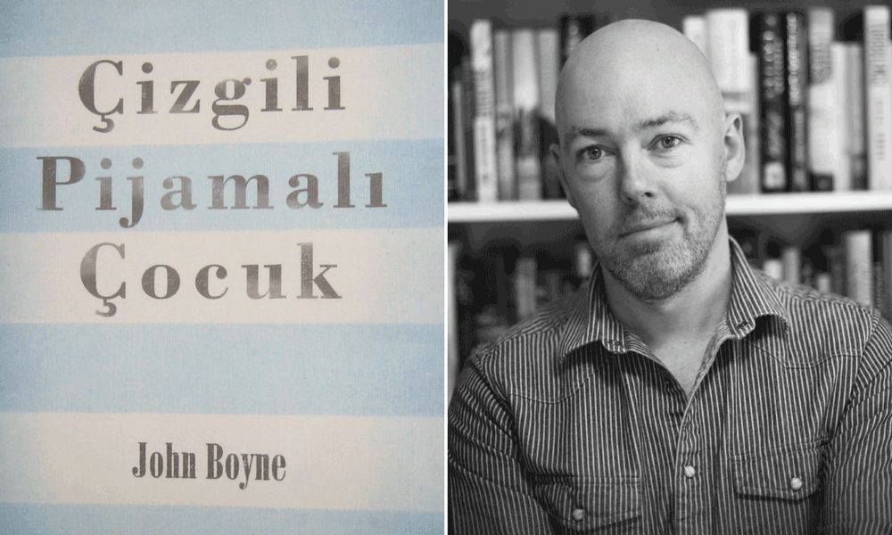

Kitablar ən qədim dövrlərdən bəri var olan və həyatımızın hər sahəsində ehtiyac duyduğumuz əsərlərdir. Əlindəki hər kitabın tarixi ilə maraqlanan oxucularımız üçün hazırladığımız bu yazıda kitablar haqqında bilinməyən bir neçə maraqlı məlumatı əldə edəcəksiniz.
1.Dünyanın ən uzun cümləsi
Fransız yazıçı Viktor Hüqonun 1862-ci ildə qələmə aldığı “Səfillər” romanı dünya klassikasının şedevrlərindəndir . Romantik cərəyanın öncülərindən olan yazıçının eyni adlı əsəri bir çox film və tamaşaya çevrilmişdir. Kitabın üçüncü hissəsində üç səhifə davam edən bir cümlə vardır ki, birnəfəsə oxumaqla bitirmək mümkün deyil. 823 sözdən ibarət olan bu cümlə, indiyə qədər yazılmış ən uzun cümlə olaraq qəbul edilir.
Hüqonun ən yaxşı 3 kitabı
2.Əsərləri ən çox tərcümə edilən yazar
UNESCO-nun hazırladığı siyahıya əsasən, əsərləri ən çox tərcümə edilən yazıçı Aqata Kristidir. Yaratdığı Herkul Puaro xarakteri ilə nəfəsləri kəsən detektiv romanları yazan Kristinin kitabları dünyanın, demək olar ki, hər yerində oxunur. UNESCO-nun 1932-ci ildən bəri ərsəyə gətirdiyi bazaya əsasən, Aqata Kristinin kitablarının 7233 tərcüməsi edilib. Buradakı 7233 sayı çevrilmiş dilləri yox, kitabların neçə fərqli formada çevrilməsini göstərir.
Aqata Kristinin 3 ən yaxşı kitabı
3.Ən qısa vaxtda yazılan kitab
Ən çox sevilən və oxunan uşaq kitablarından olan “Zolaqlı pijamalı oğlan”, sadəcə 2,5 gündə yazılıbdır. John Boyne tərəfindən qələmə alınan kitab 2,5 gündə tamamlan bu roman indiyədək ən qısa müddətə yazılan romanları siyahısında ilk pilləyə yiyələnib.
John Baynenin ən yaxşı 3 kitabı
4.İndiyədək ən çox satılan kitab

Bu günədək ən çox satılan kitab Charles Dickensin 1859-cu ildə nəşr etdiyi “İki şəhərin hekayəti” adlı romandır. Kitabın təxminən 200 milyon nüsxəsi satılıb və hələ satılmağa davam edir. Kitabın orijinal adı “A Tale of Two Cities”dir. İngilis dilində çap edilmiş bu kitab Fransız İnqilabı zamanı baş verən hadisələrdən bəhs edir.
Charles Dickensin 3 ən yaxşı kitabı